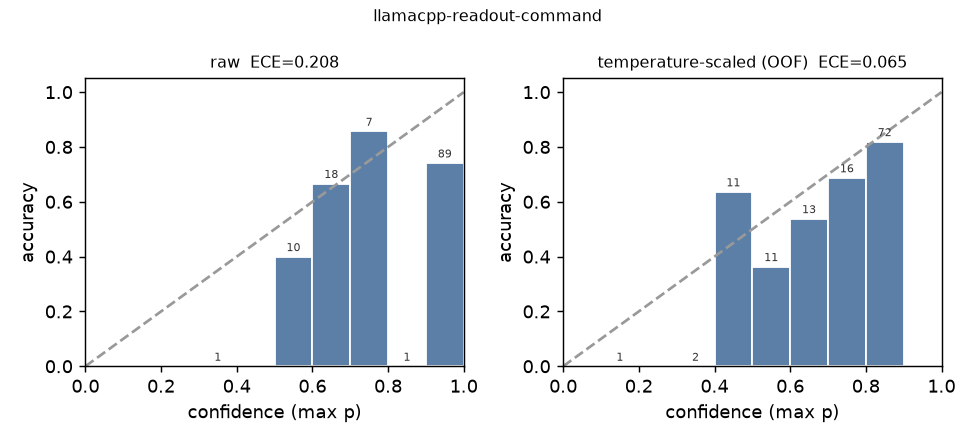
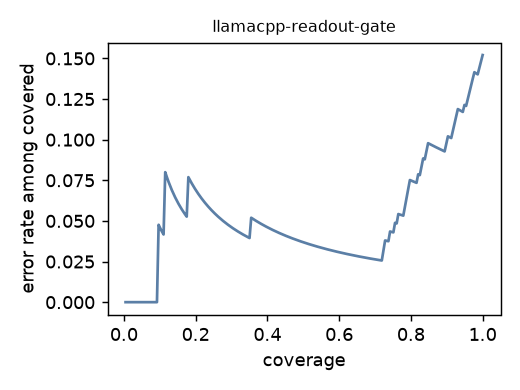

A System One layer for an offline network agent: what a calibrated yes/no buys a confirm gate
Notes from putting the Jev idea next to a 4B model on a Qualcomm NPU. September 2026.
I run a network-management assistant on a Qualcomm QCS9075 board. A 4-billion-parameter instruction-tuned model (Qwen3-4B-Instruct-2507, 4-bit, compiled for the Hexagon NPU) reads an operator's sentence, picks a tool, fills its parameters, and a human confirms every write before it reaches the switch. On canonical phrasing it is a 92–97% agent. On paraphrases it is a 77% agent, and on "symptom-first" phrasing ("the camera on 3 looks dead — check whether it's getting power") a 62% agent. Those numbers are old news to me; I wrote them up in the series on this board.
What kept nagging me is not the accuracy. It is two properties of how it fails.
First, the failures are structured. I pulled the 44 misses out of the 195-case paraphrase run and sorted them: 20 are confusions between adjacent catalog commands (12 access-VLAN vs trunk, 4 VLAN-config vs VLAN-membership, 2 PoE-off vs port-shutdown, 1 speed vs shutdown, 1 PoE mode vs PoE limit), 13 are "run diagnostics instead of a status read" (usually defensible), 10 are format slips where the model emitted the right command name in the wrong slot (a deterministic normalization recovers all of them), and 1 is a parameter. The dangerous subset is small in count and large in consequence: shutting an interface when the operator asked to cut PoE power takes a camera off the network until someone reverts it.
Second, the model emits no probability. A generated tool call is a one-hot event. The confirm card shows the rendered command and the model's own reason, both written by the thing that may have misread the request, and it cannot show how sure anything is. And I cannot read a probability off the serving stack either: the compiled NPU runtime returns "logprobs": null, ignores max_tokens, and has no prefix cache (measured, September 2026, GenieX v0.4.0; the binaries of every GenieX version on my machine contain no n_probs plumbing at all).
Then Jev shipped.
What Jev is, as a concept
TypeSafe's Jev is a "System One model": you give it a state (text) and a map of typed questions — NOUL (is X true? → one probability), CHOICE (which of these K? → a distribution), SCORE (which ordered level? → a distribution and an expected value) — and it answers all of them in one non-autoregressive pass, in tens to hundreds of milliseconds, trained so that the probabilities are calibrated ("RLCD" instead of RLHF). Nothing is generated, so nothing has to be parsed and nothing can come back outside the answer space you defined. The docs recommend acting above confidence 0.9, confirming between 0.5 and 0.9, escalating below, and raising the bar for destructive actions.
I do not care much whether that particular model is the right one for me — it is cloud-only, and my board has no internet, ever. I care about the interface: a distribution the application thresholds, with a confidence axis. That is exactly the object my confirm gate lacks. Within days of the launch, open reproductions appeared on Hugging Face: a 151M ModernBERT cross-encoder with an abstention slot (openJev-verdict-2.0), a 421M RLCD-trained ModernBERT-large (Laya), a DeBERTa-v3-large with a span-scoring head trained on public gold labels (open-jev-deberta), LoRA adapters with a scalar decision head on Qwen3.5 (Open-Jev-2B/9B), and a log-likelihood readout wrapper for any instruction-tuned LM (OpenJev). Small encoders run on a CPU. So the question became concrete:
How much calibrated, typed decision-making can I serve locally, next to the generative agent, for this workload — and what does it buy the confirm gate?
Four ways to serve the same interface
I built a small library (jevlet, code and data at the end) whose only job is to make four very different backends return the same object: per question, a probability vector aligned with the options, the pre-softmax scores it came from, and Jev's concentration confidence (Kmaxp−1)/(K−1). Then one calibration and analysis pipeline serves all of them.
- Next-token readout of the resident 4B. The question — instructions, an option legend with single-token labels (A..X, 0..9, Yes/No), the answer format — is the system message; the state is the user message; I ask
llama-serverfor one token withlogprobsand read the pre-sampling distribution at the first position, summing case and whitespace variants. The system prompt is identical across states, so consecutive requests hit the prefix cache and pay only for the state's tokens. Option order matters to these models, so I evaluate cyclic rotations of the option list and average in option space. This needs a llama.cpp server; it cannot target the compiled NPU path. - Open encoder decision models, zero-shot. openJev-verdict-2.0 (ONNX, CPU), Laya (English and its typed-decisions checkpoint), open-jev-deberta-v3-large, each through its own SDK, plus an ordinary NLI cross-encoder as the "poor man's Jev" baseline.
- A small encoder fine-tuned on the domain, using the typed-decisions recipe (
[STATE] state [Q] instructions [OPT] option …, span-mean scoring head, cross-entropy plus Brier loss, gold-preserving augmentation), trained on the training groups only. - Rules. Regexes and lookup tables. One-hot, no epistemics; the floor every deployment gets.
The workload, made into questions
The evaluation set is the application's own: 65 canonical requests in four difficulty levels and 195 paraphrases in three styles (casual, verbose, indirect), all with the correct tool, command and parameters. For this study I added rows the set lacked — 81 adversarial confusables written to sit between adjacent commands ("kill power on 3", "take port 3 down", "not a power issue — just kill the link on 6", "stick port 9 on vlan 100"), 54 symptom-first diagnostics requests, 76 documentation and out-of-scope messages, 48 requests for the tools outside the production 4-tool profile — each with is_write, touches_poe_power, an ambiguity grade (0–3), the acceptable alternatives and a blast-radius level; plus 983 label-preserving paraphrases used only for training. The authored rows were generated by one LLM and verified row-by-row by an independent one (the change log is in the repo; human review is pending and I say so wherever these rows are used). Every split is grouped by seed request: paraphrases of one seed never cross a split.
Two question batteries:
- Router (state = the request):
tool(8-way incl. none),command(the 23-command catalog + none, with the confusable pairs named in the instructions),is_write,touches_poe_power. - Gate (state = request + proposed call + its one-line description):
matches_request. Labels come from the generative model's real calls on the 195 paraphrases (semantic label: does the proposed command with these parameters do what was asked?), the gold call, and synthetic negatives that swap the operation for its confusable neighbour or change the port.
What I measure: accuracy per style, ECE before and after out-of-fold temperature scaling (folds grouped by seed), Brier, selective accuracy at Jev's thresholds, order-flip rate, how many of the generative model's real confusions the gate flags, how many correct proposals it false-flags, and how many dangerous swaps it lets through.
Result 1 — routing through the same model buys nothing
Before any of the fancy stuff, the obvious idea: ask the 4B a CHOICE question ("which tool?") as a text label on the production path, and route on that. Measured live on the board on the 195 paraphrases: the text-label tool choice scored 88.7% (75.4% on indirect phrasing) against 93.3% for the model's own tool call once format slips are normalized; a 24-way command label scored 70.8% against 83.1%; and 7% of the labels changed when I reversed the option order. Classifying into a fixed set is not easier for this model than generating the call. The paraphrase suite also needs only two tools, both already in the 4-tool profile, so dynamic profile selection cannot lift the 77.4% at all — it is a coverage feature for the other eight tools, not an accuracy feature. (Measured; negative result.)
Result 2 — the readout gives a probability, but not a calibrated one until you fix it
The logprob readout (upstream llama-server, CPU, Qwen3-4B Q4_0, 3 rotations averaged) on all 260 evaluation requests:
| question | accuracy | canon / A / B / C | ECE raw → scaled | errors above conf 0.9, raw → scaled |
|---|---|---|---|---|
| tool (8-way) | 96.5% | 100 / 95.4 / 100 / 90.8 | 0.033 → 0.013 | 4 → 6 of 9 |
| command (24-way) | 84.6% | 87.7 / 75.4 / 89.2 / 86.2 | 0.133 → 0.070 | 23 → 12 of 40 |
| is_write | 98.1% | 100 / 98.5 / 100 / 93.8 | 0.019 → 0.008 | 4 → 1 of 5 |
| touches_poe_power | 98.8% | 100 / 96.9 / 98.5 / 100 | 0.014 → 0.010 | 3 → 3 of 3 |
Two things to read off that table. The command accuracy (84.6%) is about the generative call's semantic command accuracy on paraphrases (83.1%); the readout is not a better router. And the raw probabilities are dangerous: on the 24-way question, 23 of the 40 errors sat above 0.9 confidence. A single fitted temperature (T≈3.4, fitted out-of-fold on other seeds) halves ECE and halves the confident errors; it cannot remove them. An earlier pass with a single option ordering on a 15-way version of the question flipped 15.8% of predictions when the order was reversed; averaging three rotations is the cheap fix, and the price is three requests instead of one.
The prompt wording matters more than I expected for NOUL. My first two gate passes put the raw probability of yes on correct proposals at 0.21 and at 0.82. A later controlled rerun (same 400 pairs, only the instruction sentence changed) attributes about 0.09 of that gap to the sentence itself, 0.80 → 0.71, and most of the rest to the surrounding prompt lines, the Yes/No legend above all; the ranking did not move at all (AUROC 0.957 against 0.958), the thresholds did: 21 of 400 decisions changed side at 0.5. This is the practical meaning of "calibrated": if you did not fit the threshold on your own labeled rows, you do not have one.

Result 3 — what the gate actually catches
The gate question, readout backend, 939 pairs: AUROC 0.952 overall, ECE 0.108 → 0.030 after scaling. On the synthetic negatives it is nearly airtight — swapped operations accepted 7%, wrong ports 0%, and of 156 dangerous negatives (140 swaps such as PoE-off↔︎shutdown or access↔︎trunk, plus the agent's 16 real dangerous confusions) it accepted one.
On the generative model's real calls it is a more honest picture. Of the 20 real command confusions it flags 15 at p<0.5; of the 13 "diagnose instead of the requested call" calls, 7; of the 10 format slips (which do match the request), it false-flags 2; and of the 151 correct calls it false-flags 30 at p<0.5 (76 at p<0.9). So at the 0.5 operating point the card would carry a warning on 3 of 4 dangerous misreads and on 1 in 5 correct proposals. Whether that trade is right is a product decision, and the point of having a probability is that it is a decision: move the threshold to 0.3 and you keep most of the catches with fewer false alarms; the risk–coverage curve below is the whole trade-off.

Result 4 — zero-shot open Jev clones do not transfer to a 23-command catalog
| model | tool (8-way) | command (24-way) | is_write | gate AUROC |
|---|---|---|---|---|
| openJev-verdict-2.0, 151M (ONNX, CPU; 260 base rows) | 72.7% | 0.0%* | 69.2% | 0.57 |
| open-jev-deberta-v3-large, 0.4B (260 base rows) | 23.8% | 70.8% | 88.8% | 0.67 |
| NLI cross-encoder (DeBERTa-v3-base MNLI; 260 base rows) | 25.8% | 53.1% | 86.5% | 0.56 |
| Laya typed-decisions checkpoint, 421M (all 519 rows) | 61.7% | 51.4% | 81.1% | 0.73 |
| Laya English checkpoint, 421M (all 519 rows) | 27.2% | 46.8% | 86.7% | 0.76 |
* Verdict collapses to one label once a question has more than about six options with descriptions — the same four probe requests get the same answer at 12 — so on the 24-way question every row lands on configure_trunk_allowed_vlans; with bare option names it degrades gradually instead (46.2% at 24 options in a later probe, 42.7% on the 24-way question over 260 rows). Its authors evaluate on 5-candidate tasks; Laya's card reports the same weakness on Banking77. This is a real constraint for catalogs: either ask hierarchically or fine-tune.
None of these is usable as a gate zero-shot. The best of them, Laya, reaches AUROC 0.76 on all 939 pairs but flags 1 of the 20 real confusions at the 0.5 threshold and accepts 101 of 156 dangerous negatives; the DeBERTa and the NLI baseline are at chance. They are honest about it: their confidences on this domain are low, and after scaling none of them accepts a dangerous swap above 0.9. Fast, wrong and aware of it is a better starting point than fast and confidently wrong, but it is still not a product. On the board's CPU at four threads they answer a single yes/no in 0.27–0.8 s and the whole four-question battery in 3.4–5.8 s, the 24-option question dominating.
Result 5 — a fine-tuned 150M encoder
I fine-tuned ModernBERT-base with the typed-decisions recipe on the training groups (the rows and their paraphrases; cross-entropy plus Brier; gold-preserving augmentation) and evaluated on the 126 held-out rows the readout was also scored on. The first attempt (4 epochs, questions always in the same order) landed at tool 70.6%, command 65.1%, is_write 81.7% — and taught me something about span heads: asked a question alone, the model answered as if it were the first slot of the pack it was trained on, dropping the command question from 55% to 7%. The head is position-aware. So round two shuffled the question order in training and ran 8 epochs.
| question | 4B readout, held-out | encoder, round 1 | encoder, round 2 |
|---|---|---|---|
| tool (8-way) | 84.9% | 70.6% | 88.1% |
| command (24-way) | 69.8% (73.0% with alternatives) | 65.1% | 77.8% (79.4%) |
| is_write | 90.5% | 81.7% | 95.2% |
| touches_poe_power | 96.0% | 82.5% | 96.8% |
| command ECE, raw → scaled | 0.208 → 0.065 | 0.095 → 0.067 | 0.069 → 0.058 |
Round two is now the better router on every question, on identical rows, and its confidence is usable as shipped (three dangerous confusions on the held-out set, one above 0.9 after scaling). On the board's CPU it answers one yes/no in 126 ms at four threads and the packed four-question battery in 2.5 s; the 4B readout needs 1.24 s and 5 s for the same. Forty times cheaper per question, and more accurate, for about ten minutes of GPU time. (Measured.)
The gate is a different story. Neither the round-1 head, nor round two, nor a dedicated model trained on 2,080 class-balanced gate pairs for 6 epochs learns it: AUROC 0.53–0.65 on held-out pairs, and the balanced model accepts 79% of wrong-port proposals. That is the tell. The gate question asks whether this port and this value match the request, and a 150M encoder trained on synthetic swaps does not learn exact matching from two thousand pairs. The decoder readouts do — the 4B at AUROC 0.95, the 0.8B at 0.88.
Result 6 — a tiny decoder as the router
The obvious cheaper readout is a sub-1B decoder. Qwen3.5-0.8B first taught me a template lesson: in its default chat template the first generated token opens a thinking block, so a first-token label readout sees zero label mass and every answer is garbage. With thinking disabled it is a real, if weak, backend: tool 74.6%, command 35.0%, is_write 81.9%, touches_poe 80.8% on the 260 base rows, with 71–84% of the mass landing on the labels for the choice questions. It flips 95% of its tool answers across option orderings (averaging three rotations lifts the tool accuracy from 68.8% to 74.6%). As a gate it reaches AUROC 0.88, flags 13 of the 20 real confusions and false-flags 36 of 151 correct proposals, but it also accepts 25 of the 156 dangerous negatives. A middle point, at roughly a fifth of the 4B's cost; not yet a substitute.
Result 7 — the adversarial rows
On the 259 rows written for this study the 4B readout drops to tool 68.3% and command 60.2% (64.1% allowing the listed alternatives; 84.3% / 67.4% on the 81 adversarial confusables), while is_write and touches_poe_power hold at 85.7% and 95.8%. The order-flip rate across three rotations jumps to 36% (tool) and 29% (command). Raw, 51 of the 82 command errors sat above 0.9 confidence; after grouped temperature scaling (T≈4.9), none does — and neither does any correct answer, which is the honest state of a 4B on this question. The most common miss is mapping out-of-scope messages onto show_cable_diagnostics; the dangerous pair PoE-off → disable_port accounts for 8.
Result 8 — what it costs on the board
Everything above ran on a Grace host; the numbers that matter are on the QCS9075's own CPU next to the running NPU tenant, which took one trick: the Snapdragon llama-server binary links the Hexagon backend and aborts at start when the NPU is busy, until GGML_HEXAGON_NDEV=0 tells it to skip the DSP. With the question legend prefix-cached, a readout router question costs 1.24 s on six Kryo threads (20 evaluated tokens, ~16 tok/s incremental) and the gate question 3.1 s; a four-question battery is about 5 s, sequential. The fine-tuned 150M encoder answers one NOUL in 126 ms at four threads (195 ms at one), the gate question in 183 ms, and the packed four-question battery in 2.5 s (it is a ~1,100-token sequence). Laya: 352 ms per NOUL; the 24-option question dominates every encoder's battery. And co-tenancy is free: a generative turn through the NPU runtime took 4.43–4.52 s idle and 4.32–4.33 s with the CPU readout answering a continuous stream.
So on this board the split writes itself: the encoder is the per-turn option (router and pre-check, a few hundred milliseconds), the 4B readout is the per-write option (one gate check, three seconds, once per confirmation).
Where this sits in the agent turn
The layer never executes. Before the generative turn it decides which four tool schemas to load into the 4K context and whether to add one line to the system prompt ("this may mean either X or Y; state your reading in the confirmation"). After the turn it puts one sentence and one number on the confirm card: "Check: this shuts the interface down (link and PoE power go down); that may not be what you asked for (p=0.31)." (illustrative value). Jev's "act automatically above 0.9" is deliberately not applied to device writes; the human confirm is the product's invariant.
Serving-path reality, for anyone building this on a Qualcomm board
Probabilities are available only from upstream llama-server on the Hexagon backend (built, not yet deployed on my board, and it cannot share the NPU with the production runtime) or on the CPU, where the readout and every encoder above run beside the NPU agent. With prefix caching a readout question costs the state's tokens plus one decoded token; the whole question legend is the constant part. On the compiled path you get a text label and nothing else.
Transferable principles
- Ask for a distribution, not a sentence, at the gate. A confirm card that shows a probability has an operating point; a card that shows a reason does not.
- A probability you did not calibrate on your own labeled rows is not a probability. The same readout put 0.21 or 0.82 on correct proposals depending on the prompt around the question, and a temperature cannot move a pair across 0.5; temperature scaling on grouped folds is the minimum, and refit the thresholds whenever the question text changes.
- Rotate the options. Order bias flips a double-digit share of a small model's multiple-choice answers; averaging rotations is training-free and costs K requests.
- Don't route through the model you are trying to check. A text-label choice from the same 4B was worse than its own tool call; independence, not cleverness, is what the gate needs.
- Zero-shot decision models need small option sets. Above ~6 described options the 151M encoder collapsed; hierarchical questions or fine-tuning, not longer descriptions, are the fix.
- A fine-tuned small encoder can out-route the LM it sits next to, but shuffle the questions in training. Span heads are position-aware; the difference between 65% and 78% on the command question was question order and epochs, not parameters.
- Split the work by what each model can do. Encoders for the per-turn router and pre-check (milliseconds); a decoder readout for the per-write gate, where exact port and value matching is the job (seconds, once per confirmation).
- Measure the serving path before designing around logits. On this board the production runtime has none.
Current as of
September 2026. Board: Qualcomm QCS9075 / Dragonwing IQ-9075 EVK, GenieX v0.4.0, Qwen3-4B-Instruct-2507 W4A16 4K bundle. Host for the CPU/GPU experiments: an aarch64 Grace/GB10 machine (llama.cpp b-cb295bf CPU build, torch 2.14 cu130, transformers 5.17). Open models: heman10x/rlcd-modernbert-151m, convaiinnovations/laya, com-kotobalabs/open-jev-deberta-v3-large, cross-encoder/nli-deberta-v3-base. Jev: jev-1.13.0 docs. Code, dataset, result receipts and the preprint: github.com/kvapr/jevlet.